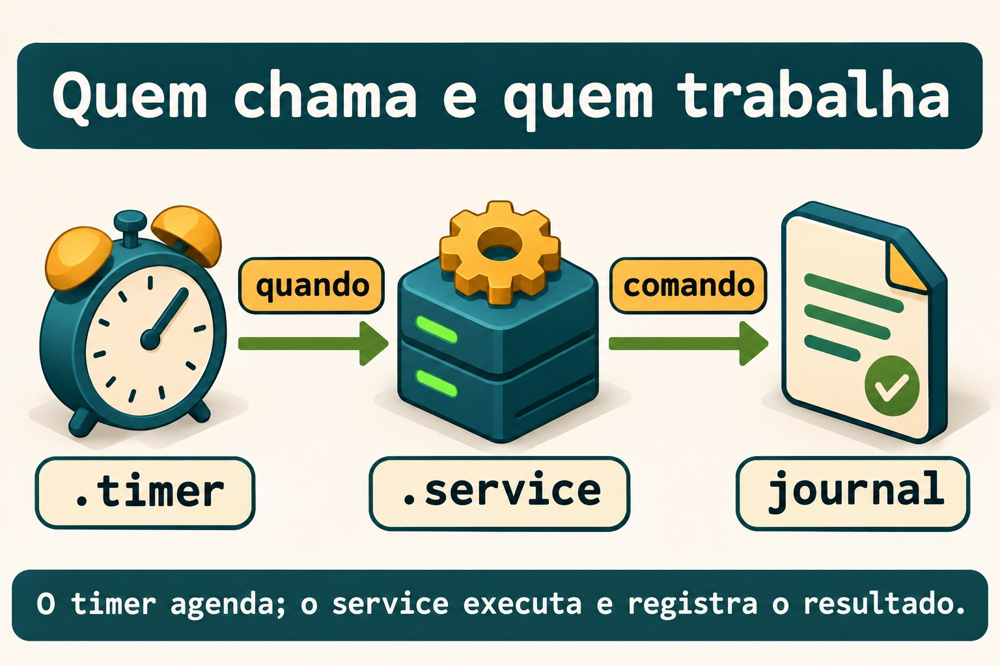
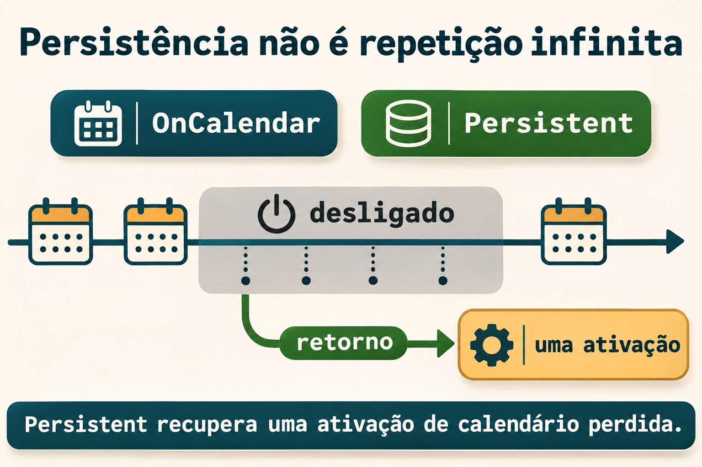

Aula 14.2 · Timers do systemd
Depois de separar agenda e comando com cron, você vai tornar essa separação explícita em dois arquivos. O timer decide quando ativar; o serviço descreve o trabalho, o usuário e o resultado. Você também vai recuperar uma ativação de calendário perdida sem alterar o relógio da VM.
Núcleo desta aula: valide os arquivos, confira o timer e leia o resultado do serviço. Persistent não executa uma cópia para cada minuto perdido. O resto é aprofundamento.
| Ficha | |
|---|---|
| Módulo | M14 · Agendamento, logs e hora, aula 2 de 5 |
| Quando | Semana 19 |
| Ao final | Você cria um par de units, verifica falhas e comprova persistência |
| Pré-requisitos | Aula 14.1; serviços systemd, journal, student e sudo |
| Tempo | Cerca de 90 minutos |
| Snapshots | m14a2-inicio e m14a2-fim nas VMs 201 e 202 |
1 · Aquecimento
Responda antes de abrir o roteiro.
- Por que a entrada instalada não comprova sucesso do trabalho?
- Qual diferença existe entre iniciar e habilitar?
- Onde você registrou saída e erro na aula anterior?
2 · Por que importa
Um backup não rodou porque a VM estava desligada no horário. Ao voltar, você precisa recuperar a ativação e saber se o comando terminou bem. Um timer de calendário persistente guarda o momento da ativação; o serviço registra o resultado no journal.
O projeto do trabalho ainda precisa lidar com repetição e duração. Persistent não transforma um comando inseguro em um backup recuperável.
3 · Modelo mental
O relógio chama a equipe; a ficha da equipe descreve o serviço. A portaria registra a chamada e a equipe registra o resultado. Habilitar só o serviço não instala uma agenda recorrente.
m14a2.timer -> m14a2.service -> comando -> journal
quando quem e como resultado

Ponte Windows
| Conceito | systemd |
|---|---|
| Gatilho | .timer |
| Ação e conta | .service, ExecStart, User |
| Resultado da execução | Propriedades do serviço e journal |
| Recuperar horário perdido | Persistent=true com OnCalendar |
4 · O essencial
Calendário e tempo relativo
OnCalendar descreve o calendário civil. Expressões como OnBootSec e OnUnitActiveSec medem intervalos relativos. A recuperação com Persistent desta aula se aplica ao calendário, não a qualquer intervalo.
systemd-analyze calendar '*-*-* *:*:00'
systemd-analyze calendar 'daily'A primeira expressão dispara a cada minuto civil; a segunda é diária. Use a ferramenta para conferir a interpretação e o próximo horário calculado no fuso real da máquina.
Persistent e duração
Com Persistent, o timer guarda a última ativação em disco. Ao voltar à atividade, recupera uma ativação que teria ocorrido enquanto estava inativo. Não cria uma fila com uma execução por minuto perdido.


Um serviço que ainda está ativo não ganha outra instância idêntica a cada disparo. Para trabalho curto, Type=oneshot e um comando que termina tornam o resultado fácil de observar.
Precisão e ambiente
AccuracySec permite uma janela de agrupamento; RandomizedDelaySec acrescenta atraso aleatório quando configurado. A agenda não promete precisão de tempo real. No lab, a janela é curta para facilitar a observação.
ExecStart não é uma linha de shell completa. Coloque lógica em um script com interpretador explícito, caminhos absolutos e tratamento de erro.

Rocky × Debian
| Item | Rocky 9 | Debian 13 |
|---|---|---|
| Units próprias | /etc/systemd/system | /etc/systemd/system |
| Serviço de exercício | m14a2.service | m14a2.service |
| Estado persistente | StateDirectory | StateDirectory |
| Recursos novos | Confira a man page instalada | Confira a man page instalada |
5 · Lab guiado
Faça o mesmo nas duas VMs. Os nomes e diretórios desta aula precisam estar livres. Nenhum timer existente será alterado.
Passo 1 · Proteger e observar
Palpite: habilitar um arquivo sem validar seu conteúdo comprova alguma execução?
No host Proxmox:
qm snapshot 201 m14a2-inicio
qm snapshot 202 m14a2-inicioNas VMs:
systemctl list-timers --all
test ! -e "$HOME/m14a2"
sudo test ! -e /etc/systemd/system/m14a2.service
sudo test ! -e /etc/systemd/system/m14a2.timer
sudo test ! -e /var/lib/m14a2
mkdir -m 700 "$HOME/m14a2"Saída esperada: inventário existente e nomes de exercício ausentes.
Verifique: se os nomes já existirem, pare para não reaproveitar ou apagar trabalho anterior sem revisão.
Passo 2 · Criar um trabalho observável
Palpite: quem deve poder escrever o estado do trabalho?
sudo test ! -e /usr/local/libexec/m14a2-run
sudo install -d /usr/local/libexec
sudo tee /usr/local/libexec/m14a2-run > /dev/null <<'EOF'
#!/bin/sh
set -eu
if [ -e /var/lib/m14a2/fail ]; then
printf 'M14A2 controlled failure\n' >&2
exit 7
fi
/usr/bin/date -Is > /var/lib/m14a2/last.txt
printf 'M14A2 completed\n'
EOF
sudo chmod 755 /usr/local/libexec/m14a2-runNa Rocky, aplique o contexto esperado ao script com sudo restorecon /usr/local/libexec/m14a2-run.
Saída esperada: script root-owned, sem executar ainda fora do diretório de estado que a unit criará.
Verifique: leia o script e identifique sucesso, falha controlada e arquivo de estado.
Passo 3 · Criar e testar o serviço
Palpite: um oneshot bem-sucedido precisa continuar aparecendo como processo ativo?
sudo tee /etc/systemd/system/m14a2.service > /dev/null <<'EOF'
[Unit]
Description=M14A2 scheduled work
[Service]
Type=oneshot
User=student
Group=student
StateDirectory=m14a2
StateDirectoryMode=0700
ExecStart=/usr/local/libexec/m14a2-run
EOF
sudo systemd-analyze verify /etc/systemd/system/m14a2.service
sudo systemctl daemon-reload
sudo systemctl start m14a2.service
systemctl show m14a2.service -p Result -p ExecMainStatus
sudo journalctl -u m14a2.service -n 10 --no-pager
cat /var/lib/m14a2/last.txtSaída esperada: comando termina com sucesso, resultado de saída zero e data real no estado. O serviço oneshot pode ficar inativo depois de concluir.
Verifique: o journal e last.txt são evidências do trabalho, não só da leitura do arquivo unit.
Decida 1
| Opção | Serviço oneshot terminou sem erro |
|---|---|
| A | Reiniciar continuamente porque ficou inativo |
| B | Trocar para um daemon que nunca termina |
| C | Conferir resultado e saída antes de diagnosticar falha |
Escolha C. Inativo depois de um trabalho concluído não é o mesmo que falhou.
Passo 4 · Instalar a agenda
Palpite: qual arquivo deve ser habilitado para a recorrência?
sudo tee /etc/systemd/system/m14a2.timer > /dev/null <<'EOF'
[Unit]
Description=M14A2 calendar
[Timer]
OnCalendar=*-*-* *:*:00
AccuracySec=1s
RandomizedDelaySec=0
Persistent=true
Unit=m14a2.service
[Install]
WantedBy=timers.target
EOF
sudo systemd-analyze verify /etc/systemd/system/m14a2.service /etc/systemd/system/m14a2.timer
sudo systemctl daemon-reload
sudo systemctl enable --now m14a2.timer
systemctl list-timers --all m14a2.timerSaída esperada: timer ativo com próximo horário calculado. Após a ativação, a data do arquivo muda e o journal ganha uma execução.
Verifique: compare próximo horário, última ativação e resultado do serviço.
Passo 5 · Recuperar uma ativação perdida
Palpite: três minutos perdidos vão criar três serviços em fila?
Depois de pelo menos uma ativação normal, pare apenas o timer próprio. Espere atravessar dois minutos de calendário sem mudar o relógio.
sudo systemctl stop m14a2.timer
date -IsApós esse intervalo, inicie novamente:
sudo systemctl start m14a2.timer
sudo journalctl -u m14a2.service --since '-5 minutes' --no-pager
systemctl list-timers --all m14a2.timerSaída esperada: uma ativação de recuperação e depois a agenda normal. Um novo minuto civil pode acrescentar outra ativação regular, que não é uma cópia recuperada.
Verifique: correlacione horários no journal com o intervalo em que o timer ficou parado.
Decida 2
| Opção | Conferir recuperação sem afetar o relógio |
|---|---|
| A | Parar só o timer próprio e esperar o calendário avançar |
| B | Parar todos os timers do host |
| C | Alterar a hora global da VM |
Escolha A. O defeito fica limitado ao objeto de exercício.
Passo 6 · Conferir após reboot
Palpite: o que precisa sobreviver para o trabalho voltar a ser chamado?
sudo systemctl rebootDepois de reconectar:
systemctl is-enabled m14a2.timer
systemctl list-timers --all m14a2.timer
sudo journalctl -b -u m14a2.service --no-pager
cat /var/lib/m14a2/last.txtSaída esperada: timer habilitado e agenda ativa. O trabalho volta a produzir evidência quando for ativado, incluindo recuperação de calendário se necessária.
Verifique: diferencie uma data antiga preservada no disco de uma nova execução registrada neste boot.
6 · Quebre e conserte
Quebra 1 · Comando inexistente
Sintoma: o serviço não consegue executar a ação configurada.
Investigação: altere só a unit própria e valide antes de iniciar.
sudo cp -a /etc/systemd/system/m14a2.service "$HOME/m14a2/service.good"
sudo sed -i 's@ExecStart=/usr/local/libexec/m14a2-run@ExecStart=/usr/local/libexec/m14a2-missing@' /etc/systemd/system/m14a2.service
sudo systemd-analyze verify /etc/systemd/system/m14a2.serviceCausa: o caminho da ação não existe. O calendário não corrige o executável.
Conserto: restaure somente essa unit e recarregue o gerenciador.
sudo cp -a "$HOME/m14a2/service.good" /etc/systemd/system/m14a2.service
sudo systemctl daemon-reload
sudo systemctl start m14a2.serviceVerifique: confira resultado e journal da nova tentativa.
Prevenção: valide o par e teste o serviço antes de habilitar o timer.
Quebra 2 · Falha do trabalho, timer ativo
Sintoma: o timer continua ativo, mas o serviço retorna falha.
Investigação: plante a condição que o script trata como erro.
touch /var/lib/m14a2/fail
sudo systemctl start m14a2.service
systemctl show m14a2.service -p Result -p ExecMainStatus
sudo journalctl -u m14a2.service -n 12 --no-pagerCausa: o código de saída 7 pertence ao trabalho; o agendador cumpriu sua parte ao chamá-lo.
Conserto: retire o sinalizador próprio e rode novamente.
rm -f /var/lib/m14a2/fail
sudo systemctl start m14a2.serviceVerifique: resultado volta a sucesso.
Prevenção: monitore o resultado do serviço, não só se o timer está ativo.
Quebra 3 · Agenda desabilitada
Sintoma: o trabalho funciona manualmente, mas não volta ao boot por sua agenda.
Investigação: desabilite apenas o timer próprio e compare os estados.
sudo systemctl disable --now m14a2.timer
systemctl is-enabled m14a2.timer
sudo systemctl start m14a2.serviceCausa: a ação continua válida, mas a agenda não está habilitada para o boot.
Conserto: execute sudo systemctl enable --now m14a2.timer.
Verifique: confira novamente habilitação e próximo horário.
Prevenção: registre arquivo, estado ativo e habilitação como evidências separadas.
Limpeza
Guarde os registros e retire somente as units e o estado do exercício. A limpeza do timer apaga seu carimbo persistente, não o de outros timers.
sudo journalctl -u m14a2.service --no-pager > "$HOME/m14a2/journal.txt"
sudo systemctl disable --now m14a2.timer
sudo systemctl stop m14a2.service
sudo systemctl clean --what=state m14a2.timer
sudo systemctl clean --what=state m14a2.service
sudo systemctl reset-failed m14a2.service
sudo rm -f /etc/systemd/system/m14a2.timer /etc/systemd/system/m14a2.service /usr/local/libexec/m14a2-run
sudo systemctl daemon-reload
systemctl list-timers --all7 · Armadilhas
| Erro | Faça | Motivo |
|---|---|---|
| Habilitar só o serviço | Habilitar o timer | A recorrência está na agenda |
| Timer ativo significa sucesso | Ler o resultado do serviço | O comando pode falhar |
| Esperar fila de todos os horários perdidos | Entender uma ativação de recuperação | Persistent não reproduz todo o passado |
Colar pipe direto em ExecStart | Usar um script | Não é uma shell implícita |
8 · Quiz
- Qual unit contém o calendário?
- O que Persistent recupera?
- Um oneshot concluído precisa permanecer ativo?
- Quem define o usuário do trabalho?
- O que verificar depois de alterar os arquivos?
- Como provar uma nova execução depois do boot?
9 · Cola
| Tarefa | Comando |
|---|---|
| Ver agenda | systemctl list-timers --all m14a2.timer |
| Interpretar calendário | systemd-analyze calendar daily |
| Ver resultado | systemctl show m14a2.service -p Result -p ExecMainStatus |
| Ler execução | sudo journalctl -u m14a2.service |
Flashcards: crie cinco cartões sobre calendário, ação, Persistent, estado ativo e resultado. Revise em D+1, D+3, D+7 e D+21.
10 · Checklist e fechamento
- [ ] Validei os dois arquivos antes de ativar.
- [ ] Observei trabalho manual, recorrente e recuperação.
- [ ] Retirei apenas os objetos de exercício.
Último exercício: explique por que o monitoramento precisa ler o resultado do serviço e não só listar timers.
Reboot de conferência: depois da limpeza, reinicie as duas VMs e confirme a ausência da agenda própria e a preservação das demais.
sudo systemctl rebootNo host Proxmox:
qm snapshot 201 m14a2-fim
qm snapshot 202 m14a2-fim11 · Na vida real
Em host autorizado, leia systemctl list-timers --all, a unit de um trabalho conhecido e seu journal. Não inicie, pare ou edite nada nesta missão. Identifique usuário, próxima ativação, última tentativa e resultado; registre uma diferença entre agenda ativa e tarefa bem-sucedida.
12 · Aprofundar quando quiser
- systemd.timer(5) e systemd.time(7): calendário e persistência.
- systemd.service(5) e systemd.exec(5): execução e diretórios de estado.
DeepTutor (http://10.1.0.149:3782, KB "Curso Linux Sysadmin"):
!explica Separe timer, service, Persistent e resultado de execução.!feynman Vou explicar por que Persistent não recupera uma cópia de cada minuto perdido. Critique minha explicação.!quiz Crie seis incidentes de timers preservando as outras units do host.
Gabarito comentado
Aquecimento
- Instalação e execução são etapas diferentes; o comando pode falhar.
- Iniciar muda o estado atual; habilitar participa do boot.
- Em arquivos separados com saída e erro redirecionados.
Quiz
- A unit
.timer. - Uma ativação de calendário que teria ocorrido durante a inatividade.
- Não; pode voltar a inativo depois de terminar com sucesso.
Userna unit de serviço deste lab.- Sintaxe, recarga do gerenciador, estado da agenda e execução real.
- Compare o journal do boot atual e a data nova produzida.
← Aula 14.1 · cron e at · Índice de aulas · Plano do curso: 14.3 em diante →